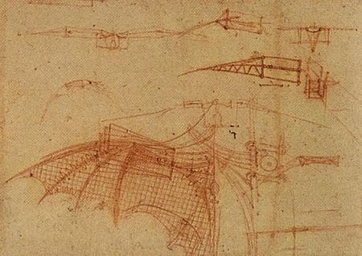

About
Born: December 10, 1815
Died: November 27, 1852
Education:University of London
As Lovelace was from an affluent family, Lovelace was tutored thrughout her childhood and adolescence, showing much interest in mathematics and science. As she reached early adulthood, Lovelace was introduced to aspring computer scientist and Lucasian Professor of Mathematics at the University of Cambridge, Charles Babbage. Babbage fostered Lovelace's interest in computer science and programming by showing her his Difference Engine. During this time, Lovelace also expressed her interest in advanced mathematics and studied differential calculus under the guidance of Professor Augustus De Morgan of the University of London. Lovelace also conversed with renown Scottish astronomer and mathematician Mary Somerville, who Lovelace discussed mathematics and Babbage's Differential Engine with.
At the age of 12, Lovelace had already conceptualized a flying machine.